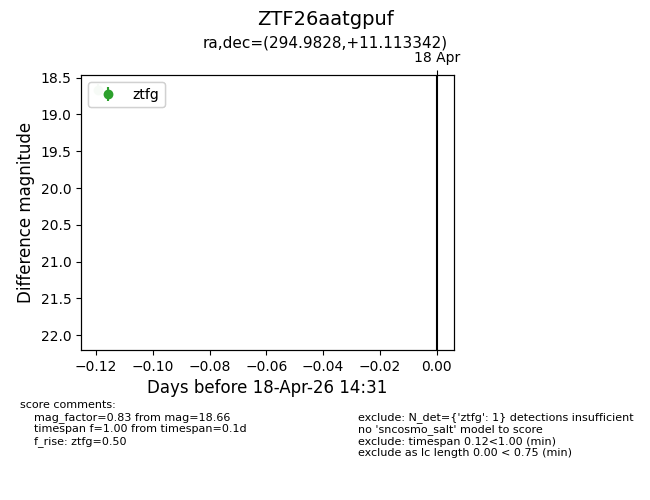
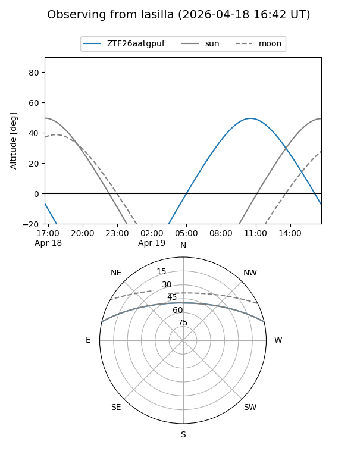
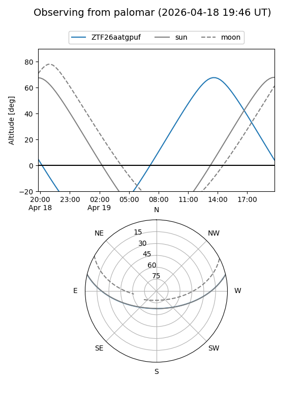
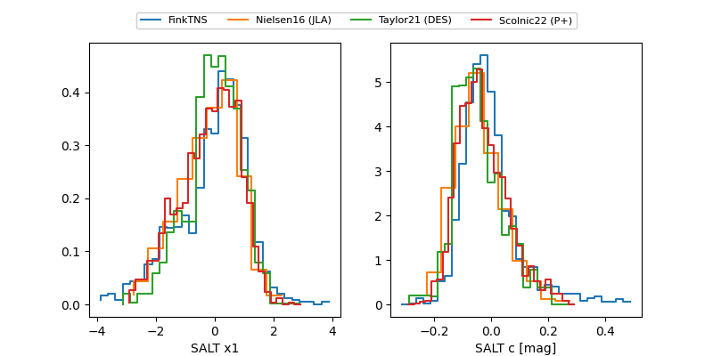

ZTF26aatgpuf
Target ZTF26aatgpuf at 2026-04-18 14:37
Aliases and brokers:
FINK: link
Lasair: link
ALeRCE: link
alt names
ZTF26aatgpuf (ztf,fink_ztf)
Coordinates:
equatorial (ra, dec) = 294.9828,+11.11334
equatorial (HMS+DMS) = 19:39:55.87,+11:06:48.03
galactic (l, b) = (48.4019,-5.48103)
Flags:
Photometry:
last ztfg=18.66
1 ztfg detections
Lightcurve

Visibility


Additional plots
